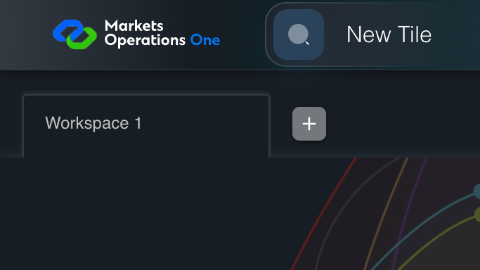
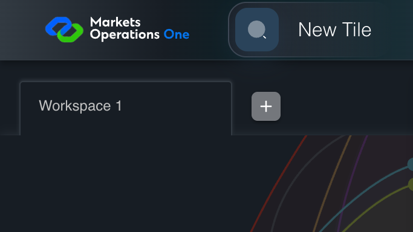
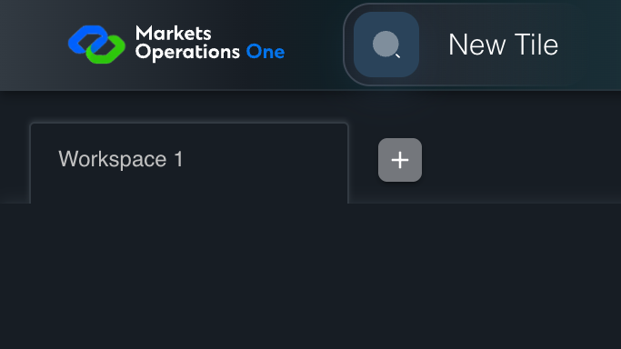

All canonical cases
UX-029: Operate header controls at 200 percent zoom Business acceptance remains unverified. Owner: unknown. Review the canonical definition and fixture limits before acceptance.
Latest local result: PASS Business acceptance: NOT_ESTABLISHED.
The latest local result describes execution. The historical definition review assesses the case design before execution.
Latest step screenshot evidence: COMPLETE . 5/5 canonical steps have execution screenshots.
Canonical Gherkin definition . Definition version: 2. SHA-256: 7e70ac6fe0b29e5fd58f92b4be6ebc16bfae0f1f6f61bee911a967436e81f36f.
Historical definition review (preflight): UNVERIFIED A definition review FAIL can coexist with local PASS. The definition failed preflight quality checks.
This historical review does not change the latest execution result. Resolve definition gaps before business acceptance.
Canonical Gherkin steps Feature: Responsive layout
@UX-029
Scenario: Operate header controls at 200 percent zoom
Given USER-A has Home at a 1366 by 768 CSS pixel viewport before browser zoom
When The browser fixture applies 200 percent browser zoom
And USER-A clicks the icon button with test ID "${MFE_APP_PREFIX_STYLE}_avatar_IconButton" on the Home page
Then The menu with identifier "menu-appbar-avatar" on the Home page is visible
And The menu item labelled "Logout" in the menu with identifier "menu-appbar-avatar" on the Home page is visible, enabled, and reachable through its scroll area Acceptance and evidence limits: NO_COMPLETE_REAL_APPLICATION_BINDING, CANONICAL_REVIEW_OR_EVIDENCE_UNRESOLVED.
Planned essential canonical frames: 2. Plan completeness requires separate review.
Latest attempt UX-029 real Chromium tab zoom 200 percent PASS · application/run-050/ux-029-real-chromium-tab-zoom-200-percent-af9df2010943-attempt-1 · ACTUAL_APPLICATION_LOCAL_SERVICES
Actual React shell in an isolated persistent Chromium context. Local extension calls real chrome.tabs.setZoom; no device scale or CSS zoom substitution. Controlled identity and catalog responses.
2026-10-22T06:06:45.587Z to 2026-10-22T06:06:49.445Z
Assertions and result · Artifact manifest · Exact run inputs and source hashes
Result SHA-256: e4edc3305e1b0289c72fde0df09e3e616d330190ece9a7d4664bc4cbb214e47c Playwright trace
Machine observations Screenshot capture: CAPTURED. Named frames: 6.
Step screenshot evidence: COMPLETE. 5/5 canonical steps have execution screenshots.
Canonical step timeline Given USER-A has Home at a 1366 by 768 CSS pixel viewport before browser zoom
1. step-01 Visible state after step 1: Given USER-A has Home at a 1366 by 768 CSS pixel viewport before browser zoom
2026-10-22T06:06:48.551Z · 1366×768d5d9c35d622367cb717f31a25f7279dcbcf960751467ce50a449f070d844b913 When The browser fixture applies 200 percent browser zoom

2. step-02 Visible state after step 2: When The browser fixture applies 200 percent browser zoom
2026-10-22T06:06:48.806Z · 683×384b354ca60ad11519e54a8ded20130ebb5a8172971cd9878a33f8a5a4a97aa33fc And USER-A clicks the icon button with test ID "${MFE_APP_PREFIX_STYLE}_avatar_IconButton" on the Home page
3. step-03 Visible state after step 3: And USER-A clicks the icon button with test ID "${MFE_APP_PREFIX_STYLE}_avatar_IconButton" on the Home page
2026-10-22T06:06:48.906Z · 683×384380a16fe591a7f51ee46302524c4bbc6bfb120530fc5cf0c546fc13ed426d6f8 Then The menu with identifier "menu-appbar-avatar" on the Home page is visible
4. step-04 Visible state after step 4: Then The menu with identifier "menu-appbar-avatar" on the Home page is visible
2026-10-22T06:06:48.954Z · 683×384380a16fe591a7f51ee46302524c4bbc6bfb120530fc5cf0c546fc13ed426d6f8 And The menu item labelled "Logout" in the menu with identifier "menu-appbar-avatar" on the Home page is visible, enabled, and reachable through its scroll area
5. step-05 Visible state after step 5: And The menu item labelled "Logout" in the menu with identifier "menu-appbar-avatar" on the Home page is visible, enabled, and reachable through its scroll area
2026-10-22T06:06:49.053Z · 683×384380a16fe591a7f51ee46302524c4bbc6bfb120530fc5cf0c546fc13ed426d6f8 Additional named frames 6. final-result The final visible state after the named test assertions.
2026-10-22T06:06:49.168Z · 683×384380a16fe591a7f51ee46302524c4bbc6bfb120530fc5cf0c546fc13ed426d6f8 Screenshots establish visible state only. Assertions and traces support functional claims.
Earlier attempt history (2) Earlier attempt PASS (superseded by latest PASS) UX-029 real Chromium tab zoom 200 percent PASS · application/run-055/ux-029-real-chromium-tab-zoom-200-percent-af9df2010943-attempt-1 · ACTUAL_APPLICATION_LOCAL_SERVICES
Actual React shell in an isolated persistent Chromium context. Local extension calls real chrome.tabs.setZoom; no device scale or CSS zoom substitution. Controlled identity and catalog responses.
2026-10-22T05:37:54.973Z to 2026-10-22T05:37:57.541Z
Assertions and result · Artifact manifest · Exact run inputs and source hashes
Result SHA-256: a56826cbcd0a72eb12d4f3969811762c36238182f9fb9ded2c150d30048efefb Playwright trace
Machine observations Screenshot capture: CAPTURED. Named frames: 6.
Step screenshot evidence: COMPLETE. 5/5 canonical steps have execution screenshots.
Canonical step timeline Given USER-A has Home at a 1366 by 768 CSS pixel viewport before browser zoom
1. step-01 Visible state after step 1: Given USER-A has Home at a 1366 by 768 CSS pixel viewport before browser zoom
2026-10-22T05:37:56.405Z · 1366×7685f8178fb120a2a6b79082008c96246df574c758775b7a83111637fa70d627801 When The browser fixture applies 200 percent browser zoom
2. step-02 Visible state after step 2: When The browser fixture applies 200 percent browser zoom
2026-10-22T05:37:56.554Z · 683×38412e8c7c9fdb1e93f3d6cd1517410d92d17d23178d672f754f11c14586b6d9dcb And USER-A clicks the icon button with test ID "${MFE_APP_PREFIX_STYLE}_avatar_IconButton" on the Home page
3. step-03 Visible state after step 3: And USER-A clicks the icon button with test ID "${MFE_APP_PREFIX_STYLE}_avatar_IconButton" on the Home page
2026-10-22T05:37:56.656Z · 683×384459e90f769a20176a495e76537decd889fac3a6a64649717a2af4fc4d7b0b8db Then The menu with identifier "menu-appbar-avatar" on the Home page is visible
4. step-04 Visible state after step 4: Then The menu with identifier "menu-appbar-avatar" on the Home page is visible
2026-10-22T05:37:56.910Z · 683×384459e90f769a20176a495e76537decd889fac3a6a64649717a2af4fc4d7b0b8db And The menu item labelled "Logout" in the menu with identifier "menu-appbar-avatar" on the Home page is visible, enabled, and reachable through its scroll area
5. step-05 Visible state after step 5: And The menu item labelled "Logout" in the menu with identifier "menu-appbar-avatar" on the Home page is visible, enabled, and reachable through its scroll area
2026-10-22T05:37:57.047Z · 683×384380a16fe591a7f51ee46302524c4bbc6bfb120530fc5cf0c546fc13ed426d6f8 Additional named frames 
6. final-result The final visible state after the named test assertions.
2026-10-22T05:37:57.240Z · 683×384380a16fe591a7f51ee46302524c4bbc6bfb120530fc5cf0c546fc13ed426d6f8 Screenshots establish visible state only. Assertions and traces support functional claims.
Earlier attempt PASS (superseded by latest PASS) UX-029 real Chromium tab zoom 200 percent PASS · application/run-036/ux-029-real-chromium-tab-zoom-200-percent-af9df2010943-attempt-1 · ACTUAL_APPLICATION_LOCAL_SERVICES
Actual React shell in an isolated persistent Chromium context. Local extension calls real chrome.tabs.setZoom; no device scale or CSS zoom substitution. Controlled identity and catalog responses.
2026-10-22T05:32:09.662Z to 2026-10-22T05:32:11.723Z
Assertions and result · Artifact manifest · Exact run inputs and source hashes
Result SHA-256: f1ccffe156f34feca491c809633cf431a3209ce574b5aba56f974ae345ca34ff Playwright trace
Machine observations Screenshot capture: CAPTURED. Named frames: 6.
Step screenshot evidence: COMPLETE. 5/5 canonical steps have execution screenshots.
Canonical step timeline Given USER-A has Home at a 1366 by 768 CSS pixel viewport before browser zoom
1. step-01 Visible state after step 1: Given USER-A has Home at a 1366 by 768 CSS pixel viewport before browser zoom
2026-10-22T05:32:10.876Z · 1366×7680b5c6b04a8ec29b215e6e279b9bbf69b171ce86fb44cd812e69d8f6ad9a2fa06 When The browser fixture applies 200 percent browser zoom

2. step-02 Visible state after step 2: When The browser fixture applies 200 percent browser zoom
2026-10-22T05:32:10.998Z · 683×38412e8c7c9fdb1e93f3d6cd1517410d92d17d23178d672f754f11c14586b6d9dcb And USER-A clicks the icon button with test ID "${MFE_APP_PREFIX_STYLE}_avatar_IconButton" on the Home page
3. step-03 Visible state after step 3: And USER-A clicks the icon button with test ID "${MFE_APP_PREFIX_STYLE}_avatar_IconButton" on the Home page
2026-10-22T05:32:11.231Z · 683×384459e90f769a20176a495e76537decd889fac3a6a64649717a2af4fc4d7b0b8db Then The menu with identifier "menu-appbar-avatar" on the Home page is visible
4. step-04 Visible state after step 4: Then The menu with identifier "menu-appbar-avatar" on the Home page is visible
2026-10-22T05:32:11.281Z · 683×384459e90f769a20176a495e76537decd889fac3a6a64649717a2af4fc4d7b0b8db And The menu item labelled "Logout" in the menu with identifier "menu-appbar-avatar" on the Home page is visible, enabled, and reachable through its scroll area
5. step-05 Visible state after step 5: And The menu item labelled "Logout" in the menu with identifier "menu-appbar-avatar" on the Home page is visible, enabled, and reachable through its scroll area
2026-10-22T05:32:11.382Z · 683×384380a16fe591a7f51ee46302524c4bbc6bfb120530fc5cf0c546fc13ed426d6f8 Additional named frames 6. final-result The final visible state after the named test assertions.
2026-10-22T05:32:11.501Z · 683×384380a16fe591a7f51ee46302524c4bbc6bfb120530fc5cf0c546fc13ed426d6f8 Screenshots establish visible state only. Assertions and traces support functional claims.